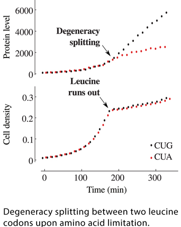

News Archives : 2013 : Deciphering a Regulatory Code within the Genetic Code [Cluzel lab]
by Kathleen Dave and Arvind Subramaniam
January 2, 2013
The genetic code is degenerate because most of the amino acids used in protein synthesis are encoded by multiple nucleotide triplets, or codons. The amino acid leucine, for example, has six synonymous codons: CUA, CUC, CUG, CUU, UUA and UUG. Mutations between synonymous codons do not change the identity of the amino acid that’s incorporated into the protein. Therefore, synonymous codons have been thought to play identical roles during protein synthesis and, perhaps, to serve as protection against point mutations in DNA. However, researchers have continued to search for evidence of other potential functions for synonymous codons, guided by the idea that these codons may comprise a code hidden within the genetic code.
When nutrients in the environment were scarce, the degeneracy of the genetic code disappeared in E. coli bacteria, reported Cluzel and colleagues in a recent issue of PNAS (AOP). Within families, synonymous codons split into a hierarchy of “robust” and “sensitive” codons, with associated protein synthesis rates that varied over as much as 100-fold. This work suggests that organisms may lift the degeneracy of the genetic code as a strategy for adapting protein synthesis to changes in their environment.
Postdoctoral fellow Arvind Subramaniam, the lead author of the study, created a library of Yellow Fluorescent Protein (YFP) genes in which synonymous codons for single amino acids were systematically mutated to one of the synonyms and then expressed in the bacterium Escherichia coli. As expected, synonymous mutations did not affect YFP expression when cells were growing under standard laboratory conditions in nutrient-rich medium. However, surprisingly, the same mutations caused YFP levels to vary as much as 100-fold when E. coli cultures ran out of the cognate amino acid in the growth medium. Some codons were robust to the stress of amino acid limitation, i.e. their overrepresentation in the gene made little difference in protein synthesis rate in amino acid-limited, compared to typical, conditions. However, other codons were sensitive to amino acid-limited conditions. Their overrepresentation in the gene led to a dramatic decrease in the protein synthesis rates of those variants. This divergence between synonymous variants of a gene upon amino acid limitation is strikingly reminiscent of the degeneracy lifting observed in physical systems in response to external perturbations.?
Notably, neither of the two prime suspects, codon usage frequency nor tRNA abundance, explained the observed differences in synthesis rate between synonymous gene variants. Rather, competition among tRNAs for aminoacylation was implicated as the key intracellular mechanism that governs the effect of each synonym. The authors found that that the expression level of a number of endogenous E. coli proteins during amino acid deficient growth could be predicted solely from the usage of codons in their coding sequences.
These findings highlight a simple strategy by which gene regulatory information is encoded within the coding sequences of proteins. Diverse biological systems ranging from bacterial biofilms to tumor micro-environments are often deficient in amino acids. Given the universality of the genetic code, the mechanism uncovered in this work might emerge as a general strategy for organisms to tailor the expression of specific proteins in response to amino acid deficiency.

Read more in PNAS or download the PDF
Read more in HARVARDgazette